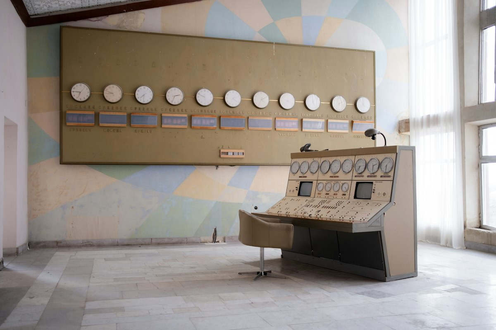

Second pass through Webb data finds a planet that was never hidden
The reduction moved a detection limit rather than the object, and that is exactly what the next paper has to confirm.

The planet was not hiding
A smudge of a galaxy at cosmological distance is an easy photograph compared with a planet standing beside its own star. The galaxy is faint but isolated. The planet drowns in light that leaves its host and scatters across every surface in the instrument. This is why planets beside their stars arrive late and arrive as arguments.
The claim circulating this week, in a ScienceDaily release dated November 10, is that astronomers found a planet hidden in images the James Webb Space Telescope already took. Read it as instrumentation. That sentence means something narrower and considerably more interesting. What moved in it is a detection limit. That is the sentence worth examining.
Nothing was hiding.
A signal that was always in the pixels crossed a threshold somebody redefined. The announcement is therefore worth exactly what the new error budget is worth, and not a unit more. Two teams can study the same frame and disagree honestly, and that is normal. The arithmetic deciding visibility simply changed under both of them.
What the glare does to a planet
Direct imaging of planets is a problem in subtraction. The telescope records the star, the optics smear that light into halos and spikes, and the planet contributes a sliver of the total. Analysts model the smeared star from other frames, subtract the model, and look for what remains. A planet is what survives the subtraction. That definition is fragile, and everyone who works this way knows it.
The recipe matters. The choice of reference frames and the decision about learning from the target frame itself both trade sensitivity against confidence. A deeper reprocessing gains depth by loosening that confidence, and the noise model records how far it loosened. That trade is legitimate and it is also the entire risk.
Why the archive holds the news
Webb points at a target for a reason fixed well in advance. The planet is seldom that reason. A team requesting a disk, a young star or a brown dwarf gets a file containing whatever else happened to sit in the frame. That file is public on a schedule and stays public, so one observing night keeps producing papers long after the proposal that funded it closed.
So a discovery of this shape is unsurprising on its face. Telescopes are built with margin, the calibration products keep improving, and subtraction practice has improved alongside them. Later reprocessing finds fainter things because fainter things were always findable in principle. The interesting question is how firmly the planet sits in the data, and how much of that firmness comes from a model.
The strongest case against it
Speckles are structured noise. Structured noise has the shape of a planet. A residual bright blob in a subtracted image can come from pointing jitter that the pipeline modelled badly, or from a detector artifact repeating in the same pixels. A background galaxy supplies another candidate, and a faint stellar companion supplies another. Independent reductions are what separate those explanations, and one team rarely supplies them.
There is a harder version of the objection. The reprocessing that reveals a faint source can also invent one. Any algorithm flexible enough to recover a planet from residuals is flexible enough to recover structure from nothing. That is the arithmetic of the method. The remedy is cheap and unfashionable: another epoch, or an independent group running its own recipe on the same frames.
What a summary sentence does not settle
Which star, which instrument mode, which pipeline: the summary answers none of them, and this desk could not retrieve the release text. Say it plainly. Writing around it is worse. The object in the frame is unknown here, and a piece that guessed at it would be worse than a piece that says it cannot.
The peer-reviewed paper behind a result like this carries the error budget, and its absence from a summary is the only honest reason to hold the claim loosely. A release is written by the group with the most enthusiasm for the result and edited for legibility by someone who does not run the pipeline. Neither party is misbehaving; the incentives point one direction.
How the claim gets hardened or killed
Orbit is the hard test. It leaves little room to argue. A real planet at that separation moves measurably between epochs taken far enough apart, and a stationary speckle does not, because it stays fixed relative to the detector. A second frame does work no amount of subtraction can do. This is why the follow-up, rather than the present announcement, is where the finding will be decided.
Spectroscopy is the other line of evidence, and a weaker one at this brightness. A planet's atmosphere imprints absorption features that a residual artifact cannot fake, in principle. At the brightness of a newly recovered source the signal is usually too thin for a clean band. So the field falls back on statistics: injection-recovery tests, where synthetic planets of known brightness are inserted into real data at known offsets to see what the pipeline reports. A team that publishes that curve and loses nothing in it has done the honest version of this work.
The parts of a reprocessing that carry weight
Start with the pipeline description. It is where a claim is most often quietly weakened. A credible paper states which frames served as the template and how the uncertainty was propagated rather than assumed. It also says what was done about the detector's own defects, which are not random. It reports what happened when the recipe ran on a target with no known planet, because a method that finds things in empty fields is not a method.
The second thing that carries weight is dull: the source has to survive a change of analyst. Groups that reprocess other people's data are common now, and their results are the closest available substitute for a repeatability test. A planet that survives one recipe and disappears under another is a property of the recipes. The field has seen that pattern often.
Living with the announcement for now
Catalogues move slowly on purpose. The machinery separating a candidate from a confirmed planet is unglamorous and working as designed. A source tagged as a candidate stays a candidate until an independent group reproduces it. Readers can treat the word discovery as a paper title rather than a status. Nothing about the telescope changes because of a headline; the archive will be reread many times, and the frame is not going anywhere.
Anyone who has read these figures knows their texture. A black panel with a small inset boxed in white, and a rotated arrow marking north. The source itself is a couple of pixels, legible only against the colorbar at the panel edge. It is a modest visual object for this much press attention.